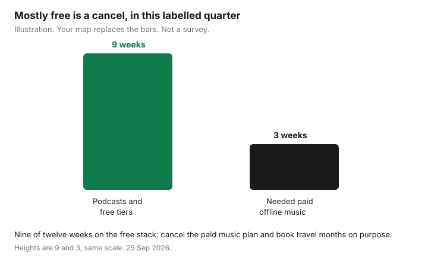

Subscriptions · Canada
Do You Need a Paid Music or Podcast App in Canada? Free Stack Alternatives
Premium is a music product. A lot of Canadian households keep it because a podcast app came bundled with the same login. Podcasts are free on Spotify’s free plan, on Apple Podcasts, and on CBC Listen. The paid features that are hard to replace are offline music, choosing the next song, and a family seat everyone actually uses. This page is a three-month test, not a lecture about ads. Prices for the paid plans, if the test says you still want one, are the Spotify and Apple Music comparison, read 25 Sep 2026.
Disclosure: This guide has no natural affiliate offer. Saving Optimizer does not claim a partnership with Spotify, Apple, YouTube, or a podcast app. Education only.
Key takeaways
- Split the household into music, podcasts, or both before you look at a price. A podcast habit does not need a music subscription.
- Spotify free still plays podcasts and music with limits. YouTube Music’s family page, as returned 25 Sep 2026, showed $11.99 individual and $18.99 family. Confirm the membership page. Apple Podcasts and CBC Listen are free.
- Library audiobooks and Hoopla albums are a substitute with a monthly cap. Halifax listed three Hoopla borrows. Ottawa listed four. That is not a full music app.
- A Family plan beats a pile of free apps when several people want offline, on-demand music in the same month. It does not beat free if only one person listens and mostly to podcasts.
- If three months were mostly free tiers and podcasts, cancel the paid plan. The cancel path is the Spotify guide or Apple’s Settings, Subscriptions list.
Map what you actually use: music only, podcasts only, or both
For two weeks, do not change anything. Each evening, one line: who listened, music or podcast, paid app or free, and whether they needed it offline. Three rows are enough to sort the house. Music only means the paid catalogue is the product, and the podcast question is a distraction. Podcasts only means you are paying a music company for a show you can get on a free app. Both means you price a music plan and leave podcasts on the free app that already works. Write the names. “We use Spotify” is not a map if half the hours were a news podcast on the same phone.
Include the car and the kitchen, not only the commute you feel virtuous about. A parent who plays one album while cooking is a music listener. A teen who watches music videos is a YouTube listener, which may already be covered by a YouTube Premium seat or by ads they tolerate. Amazon Music that arrives with Prime is not this decision. Prime’s fee is shipping and video on the Prime guide. Do not keep a second music app because Prime exists, and do not cancel Prime because you stopped using a music feature you never opened.
Free tiers and YouTube Music/free podcast apps vs Premium features
Spotify’s Canada premium page draws the line. Free does not include ad-free music, offline downloads, or playing songs in any order. Premium does, and it adds lossless on the plans listed there. Podcasts are available without that upgrade. Apple Podcasts is free. CBC Listen is free and is the practical Canadian news-and-radio stack. If the map says podcasts only, cancel Premium and leave those apps. You will hear ads in places the paid music plan never promised to remove.
YouTube Music is the free tier people already have open. The paid step is YouTube Music Premium or full YouTube Premium, which also includes Music. A YouTube Music family page returned 25 Sep 2026 showed an individual price of $11.99 a month, a family price of $18.99 a month, a $5.99 line, and an annual individual offer of $119.99. YouTube prices by country, and the account’s Purchases and memberships page is the figure that bills. Treat the page-return as a date stamp, not as a promise that your renewal matches it. Google’s help says new Android sign-ups can bill through Google Play, so a cancel may live in Play rather than in a YouTube button. Uninstalling the app does not cancel it.
What Premium buys, on Spotify’s list and on YouTube’s description of Music Premium, is ad-free music, downloads, and background or on-demand control. What it does not buy is a moral obligation to avoid ads. If ads in a podcast do not bother the person who listens, the paid tier failed the test. Compare one paid plan with the free stack. Do not stack Spotify Premium and YouTube Music Premium and Apple Music “for different moods” unless the two-week map shows three different people. The dollar comparison of Spotify and Apple list prices is the other guide. This one is whether any paid music app is doing work.
| Need | Free path | Paid path |
|---|---|---|
| Podcasts | Spotify free, Apple Podcasts, CBC Listen | Not required for the show itself |
| Pick the next song, no music ads | Limited on Spotify free | Spotify from $6.39 student or $13.99 individual. Apple from $5.99 or $11.99. |
| Music videos and a huge back catalogue on YouTube | YouTube with ads | YouTube Music Premium, page showed $11.99, or YouTube Premium if you also want ad-free video |
| Offline in the car | Library downloads, within the cap | The paid plan’s download button, before the trip |
Public library audiobooks and music borrowing limits as a substitute
A library card is the substitute for the audiobook overlay and for the occasional album, not for a daily skip button. Ottawa Public Library’s Hoopla page, read 25 Sep 2026, allows four borrows a month. Music albums count as one item and lend for seven days. Movies and TV are 48 to 72 hours. Halifax Public Libraries lists three Hoopla borrows a month on its movies and music page. Kanopy, on those pages, is tickets for video, 10 in Halifax with Kanopy Kids unlimited, eight in Ottawa with Kanopy Kids outside the ticket count. Hoopla music is a few albums a month. It will not feed a household that treats a music app like a radio station.
Libby audiobooks use the library’s own loan and hold caps, shown in the app. Holds are the cost: a new title can take weeks. That wait is acceptable for a novel and useless for a commute that starts tomorrow. Freegal, a download music service some libraries buy, was not on the Halifax page we read. If your library lists it, the weekly download cap is on that page. Use it for keepsakes. Do not describe it as Spotify. The full card setup, PressReader, and the video caps are the library media guide. Count a library borrow as a win in the three-month test. Count a hold you abandoned as a sign the paid app was doing something the library does not.
When a Family music plan still beats juggling free tiers with ads
Free tiers lose when several people want the paid features in the same month. Spotify Family is $23.99 and Apple Family is $19.99 at the list prices read 25 Sep 2026, for up to six listeners. Three adults on three free accounts, each hitting an ad wall and none able to download for the cottage, is not cheaper once someone subscribes “just for the drive” and the others follow. One Family plan, one bill, separate logins. The break-even counts are on the comparison guide: two full-price Apple listeners, or three Spotify listeners, or a Spotify couple on Duo at $19.99 rather than Family.
Family loses when the map shows one listener and a house of podcasts. It also loses when an eligible student can stay at $6.39 or $5.99 and the other adult is fine on free or on a single Individual. Do not buy Family to feel organized. Buy it when the alternative is two or three paid Individuals, which is $27.98 or $41.97 on Spotify and $23.98 or $35.97 on Apple before tax. Ads are a real cost only if they make someone turn the app off and open a paid one anyway. If they skip the ad and keep listening, the free tier is working.
Car and commute realities: offline downloads that justify paid
The honest paid feature for a Canadian commute is offline. Underground stations, cottage highways, and a winter data cap are not theoretical. Spotify and Apple both put downloads on the paid plan. YouTube Music Premium’s description includes downloads. A library album on Hoopla can be downloaded in the app for the loan window, on a phone, and it expires. That is enough for a planned drive and not enough for a month of shuffle.
Test it on one real commute before you keep the plan for “the car.” Download the night before on the home network. If the drive works offline and you do that every week, the plan is a commute tool and the price is the price of that tool. If you streamed on data the whole way and the downloads were empty, you are paying for a feature you do not use. Bluetooth in a newer car does not require Premium. It requires a phone. The car is not a reason by itself. The dead zone is.

Decision rule: cancel paid if you finished three months mostly on free/podcasts
After the two-week map, keep going until you have twelve weeks, or use the listening history you already have. If nine or more of those weeks were podcasts and free tiers, cancel the paid music plan. “Mostly” means the paid features were not load-bearing. A single road trip does not flip the rule. It belongs on the travel-month calendar in the cancel guide: pay for the month you travel, not for the quarter you do not. If paid offline or on-demand music shows up in most weeks for at least one person, keep one plan, not three. Downgrade a Family plan that has one listener. Move a graduate off a student price only when the school eligibility has ended, or the bill will move itself.
Cancel where the receipt says you were billed. Spotify’s account page, Apple’s Settings then Subscriptions, or Google Play. Then look at the next statement. A plan you cancelled inside the wrong account will still be on the card, which is the usual ending of this story and the reason the audit exists. One in, one out still applies if you later start YouTube Music because it was on sale. The free stack you just proved you can live on is the default. The paid plan has to earn a return.
Sources & date stamps
- Spotify Canada premium page, read 25 Sep 2026: free versus Premium features; Individual $13.99, Student $6.39, Family $23.99. Apple Music Canada page, same day: Student $5.99, Individual $11.99, Family $19.99.
- YouTube Music family page as returned 25 Sep 2026: individual $11.99 a month, family $18.99, a $5.99 line, annual individual $119.99. Confirm on youtube.com/paid_memberships. Google’s Play note: uninstalling does not cancel a Play subscription.
- Ottawa Public Library Hoopla and Kanopy pages, and Halifax Public Libraries movies and music page, read 25 Sep 2026: Hoopla 4 borrows in Ottawa and 3 in Halifax; album loan 7 days in Ottawa; Kanopy 8 tickets in Ottawa and 10 in Halifax; Kanopy Kids excluded from the ticket cap.
Frequently asked questions
Do I need Premium for podcasts?
No. Spotify's free plan plays podcasts. Apple Podcasts and CBC Listen are free. Premium's advertised gain is ad-free music, offline downloads, and playing songs in any order, not a podcast app.
What does YouTube Music Premium cost in Canada?
A YouTube Music family page returned 25 Sep 2026 showed $11.99 individual, $18.99 family, a $5.99 line, and $119.99 for an annual individual plan. YouTube prices by country. The Purchases and memberships page on your account is the price that bills.
Can the library replace Spotify?
Partly. Ottawa's Hoopla page allows four borrows a month, and an album is one borrow for seven days. Halifax lists three. That covers a planned album, not daily shuffle. Kanopy is video tickets, not a music catalogue.
When is a Family plan still worth it?
When two or more people need offline, on-demand music and the alternative is two or three Individual bills. Spotify Family is $23.99 and Apple Family is $19.99 at the list prices we read. One podcast listener does not need Family.
What is the cancel rule?
If nine or more of twelve weeks were podcasts and free tiers, cancel the paid music plan. A single trip is a travel month on the calendar, not a reason to pay all year. Cancel where the receipt says you were billed.